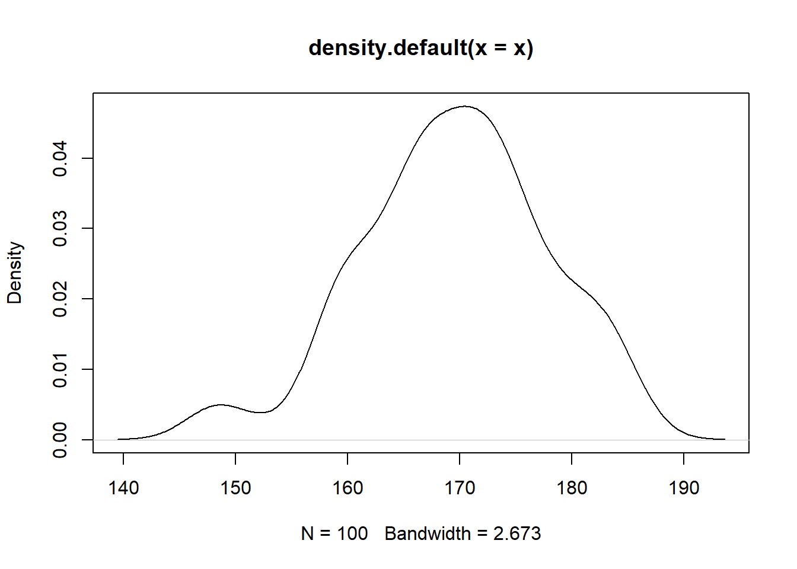
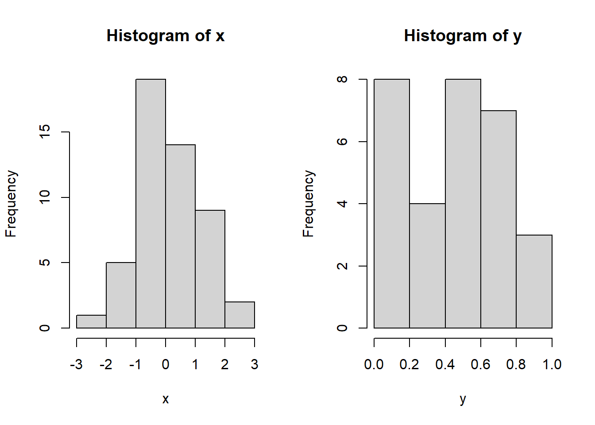
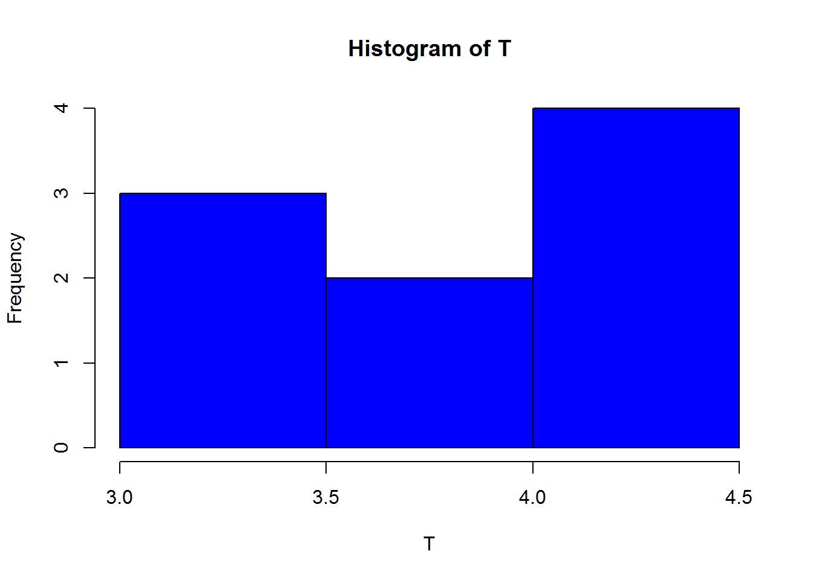

Pruebas no paramétricas
Gran parte de los procedimientos descritos anteriormente de pruebas de hipótesis, consideran que las observaciones provienen de poblaciones normales. En muchas situaciones este supuesto no se cumple. Una alternativa a la no normalidad de los datos, es proceder a implementar pruebas no paramétricas.
Pruebas de normalidad
La hipotesis nula y alternativa de normalidad son las siguientes:
\[H_0: \quad Los\quad datos\quad se\quad distribuyen \quad normal\]
\[H_1: \quad Los\quad datos\quad no \quad se\quad distribuyen \quad normal\] Existen diferentes pruebas para evaluar la normalidad, todas son de fácil implementación en R.
Test de Kolmogorov-Smirnov K-S
Se emplea para saber si una distribución de probabilidad acumulada difiere de una distribución hipotética, por lo general la distribución normal, la uniforme, la de Poisson o la exponencial. Es decir permite contrastar si un conjunto de datos muestrales proviene de un tipo de distribución.
Estadístico
Cuando K-S se aplica para contrastar la hipótesis de normalidad de la población, el estadístico de prueba es la máxima diferencia entre las funciones de distribución de probabilidad muestral y la teórica:
\[D=max|F_n-F_0(x)|\]
Siendo \(F_n(x)\) la función de distribución muestral y \(F_0(x)\) es la función teórica (normal) especificada en la hipotesis nula \(H_0\)
Pruebas de hipótesis
\(H_0:\) Los datos analizados siguen una distribución M.
\(H_1:\) Los datos analizados no siguen una distribución M
Ejemplo probando la distribución exponencial
Celia quiere medir el tiempo de atención a los usuarios. Se seleccionaron 20 personas y los tiempos de atención en minutos.
require(car)## Loading required package: car## Loading required package: carDatatiempo<-c(3.69, 39.50, 4.43, 2.70, 9.11, 10.21, 10.44, 2.57, 5.68, 0.80,
12.63, 2.35, 25.47, 8.07, 0.96, 0.21, 12.06, 10.79, 6.58, 13.06)
par(mfrow=c(1,3))
hist(tiempo, xlab = "Tiempo", ylab = "Frecuencia", las=1, main = "", col = "gray")
qqPlot(tiempo, col = "gray", ylab="Tiempo")## [1] 2 13plot(density(tiempo), xlab = "Tiempo", ylab = "Densidad", las=1, main = "")
Se procede a revisar el ajuste con respecto a una distribución exponencial con un α=0.05
Sea X el tiempo entre llegadas a Celia Express.
\[H_0:X∼exp\]
\[H_1:X≁exp\] la siguiente función ayuda a estimar los parámetros del modelo
library(MASS)
Ajustex <- fitdistr(tiempo,"exponential")
Ajustex## rate
## 0.11030831
## (0.02466569)Ks<- ks.test(tiempo, "pexp", rate=Ajustex$estimate[1])
Ks##
## One-sample Kolmogorov-Smirnov test
##
## data: tiempo
## D = 0.13678, p-value = 0.8006
## alternative hypothesis: two-sidedSegún las pruebas realizadas, no se rechaza la hipótesis nula y por tanto, se asume la distribución exponencial.
Ejemplo comparando dos distribuciones
x y y provienen de la misma distribución
\[H_0:X∼y\]
\[H_1:X≁y\]
x <- rnorm(50)
y <- runif(30)
par(mfrow=c(1,2))
hist(x)
hist(y)
ks.test(x, y)##
## Two-sample Kolmogorov-Smirnov test
##
## data: x and y
## D = 0.44, p-value = 0.0009116
## alternative hypothesis: two-sidedTest de Shapiro-Wilk
También se usa para contrastar normalidad de un conjunto de datos, cuando la muestra es como máximo de tamaño 50. Es una alternativa más potente que la prueba de K-S.
Para efectuarla se calcula la media y la varianza muestral \(S^2\), y se ordenan las observaciones de menor a mayor, luego se calculan las diferencias entre: el primero y el último; el segundo y el penúltimo; el tercero y el antepenúltimo, etc. y se corrigen con unos coeficientes tabulados por Shapiro-Wilk.
El estadístico de prueba es:
\[W=\frac{D^2}{nS^2}\]
donde D es la suma de las diferencias corregidas.
Ejemplo en R probando normalidad
Se necesita verificar si es correcto suponer que el volumen de llenado (en onzas) de una máquina dispensadora de jugos sigue una distribución normal, por lo que se toman 25 botellas de forma aleatoria. Los datos del volumen de llenado obtenidos de la muestra se encuentran almacenados en el vector volumen.
Hipótesis
\(H_0:\) el volumen de llenado (en onzas) sigue una distribución normal.
\(H_1:\) el volumen de llenado (en onzas) no sigue una distribución normal.
Nivel de significancia: 0.05 (Hipotético).
Analisis descriptivo
volumen <-c(8.39,12.14, 11.80,12.04,7.34,12.62,11.51,12.47,11.08,14.32,11.33,11.56, 12.79,11.72,12.84,11.73,12.1, 11.88,11.95,10.84,11.79,13.21,12.56,12.55,12.80)
mean(volumen)## [1] 11.8144sd(volumen)## [1] 1.4036require(car)
library(MASS)
par(mfrow=c(1,3))
hist(volumen, xlab = "Volumen de llenado", ylab = "Frecuencia", las=1, main = "", col = "gray")
plot(density(volumen), xlab = "Volumen de llenado", ylab = "Densidad", las=1, main = "")
qqPlot(volumen, xlab="Cuantiles teóricos", ylab="Cuantiles muestrales", las=1,main="")
## [1] 5 1ks.test(volumen, "pnorm", mean =11.81, sd=1.4)##
## One-sample Kolmogorov-Smirnov test
##
## data: volumen
## D = 0.21516, p-value = 0.1703
## alternative hypothesis: two-sidedshapiro.test(volumen)##
## Shapiro-Wilk normality test
##
## data: volumen
## W = 0.8161, p-value = 0.0004272Ejemplo en R
Se mide las concentraciones de cortisol en dos grupos de mujeres antes de dar a luz. Al grupo 1 se le practicó una cesárea de urgencias después de inducido el parto. Las del grupo 2, dieron a luz mediante operación cesárea o vía vaginal después de presentarse el trabajo de parto expontáneamente.
Verifique normalidad en los conjuntos de datos usando α = 0.05.
Verifique la igualdad de varianzas entre los grupos de datos
Según la prueba de varianzas, que prueba recomienda para comparar las medias entre los grupos de madres
###Ingresamos los datos como vectores de los dos grupos de madres
grupo1=c(411,466,432,409,381,363,449,483,438,381)
grupo2=c(584,553,516,688,650,590,574,700,831,688,478,689)
## Prueba de normalidad
shapiro.test(grupo1)##
## Shapiro-Wilk normality test
##
## data: grupo1
## W = 0.96658, p-value = 0.8575shapiro.test(grupo2)##
## Shapiro-Wilk normality test
##
## data: grupo2
## W = 0.95245, p-value = 0.673#prueba para saber si provienen de la misma distribución
ks.test(grupo1,grupo2)## Warning in ks.test(grupo1, grupo2): cannot compute exact p-value with ties##
## Two-sample Kolmogorov-Smirnov test
##
## data: grupo1 and grupo2
## D = 0.91667, p-value = 0.0002089
## alternative hypothesis: two-sided## Prueba de igualdad entre varinzas
var.test(grupo1,grupo2)##
## F test to compare two variances
##
## data: grupo1 and grupo2
## F = 0.16182, num df = 9, denom df = 11, p-value = 0.0108
## alternative hypothesis: true ratio of variances is not equal to 1
## 95 percent confidence interval:
## 0.04510143 0.63304938
## sample estimates:
## ratio of variances
## 0.1618194## prueba de diferencias entre medias
t.test (grupo1,grupo2,paired=FALSE,conf.level=0.95)##
## Welch Two Sample t-test
##
## data: grupo1 and grupo2
## t = -6.7277, df = 14.996, p-value = 6.787e-06
## alternative hypothesis: true difference in means is not equal to 0
## 95 percent confidence interval:
## -272.7363 -141.4970
## sample estimates:
## mean of x mean of y
## 421.3000 628.4167\[H_0:grupo1∼grupo2\]
\[H_1:grupo1≁grupo2\]
Prueba no paramétrica para la diferencias entre dos poblaciones
Prueba de Mann-Whitney
Es una prueba no paramétrica para identificar diferencias entre dos poblaciones basadas en el análisis de dos muestras independientes.
Se usa cuando los conjuntos de datos no cumplen los requisitos de la prueba de t-Student y la normal, (normalidad de los datos y tamaño de muestra mayor a 30)
Para realizar la prueba las observaciones de las dos muestras deben estar en orden ascendente.
También se conoce con otros nombres: Mann–Whitney–Wilcoxon, Wilcoxon rank-sum test y Wilcoxon–Mann–Whitney. Por ello está disponible en R por medio de la función wilcox.test.
La prueba se basa en una comparación de cada observación de una muestra \(x_i\) con cada observación en la segunda muestra \(y_i\) Si las muestras tienen la misma mediana, entones cada observación tiene un 50% de probabilidad de ser mayor o menor que la observación correspondiente de la otra muestra. Por tanto plantea las hipotesis:
\[H_o:P(x_i>y_i)=0.5\] \[H_1: P(x_i>y_i) \neq 0.5\]
Ejemplo Prueba de wilcoxon en R
Los datos siguientes datos corresponden a constantes de permeabilidad de la membrana chorioamnion en humanos (una membrana placentaria) medida a las 12 y 26 semanas de edad gestacional.
realice una prueba de normalidad para verificar la normalidad en los conjuntos de datos
Asumiendo que los datos no son normales, pruebe a un nivel de significancia de α = 0.05 para chequear la alternativa, mayor permeabilidad de la membrana chorioamnion para el inicio del embarazo.
x=c(0.80, 0.83, 1.89, 1.04, 1.45, 1.38, 1.91, 1.64, 0.73, 1.46)
y=c(1.15, 0.88, 0.90, 0.74, 1.21)
# prueba no parametrica dewilcoxon
wilcox.test(x,y, alternative = "g")##
## Wilcoxon rank sum exact test
##
## data: x and y
## W = 35, p-value = 0.1272
## alternative hypothesis: true location shift is greater than 0##PRUEBA DE NORMALIDAD
shapiro.test(x)##
## Shapiro-Wilk normality test
##
## data: x
## W = 0.91129, p-value = 0.29shapiro.test(y)##
## Shapiro-Wilk normality test
##
## data: y
## W = 0.91538, p-value = 0.5006Prueba de bondad de ajuste para datos discretos
Para estimar los parámetros de una distribución de probabilidad discreta (poisson y bonimial), se requiere la función goodfit del paquete vcd. Esta función también realiza la prueba de bondad y ajuste y sus argumentos son: variable de interés, tipo de distribución y método. Se usará el test de Chi-cuadradado a través del argumento “MinChisq”
En el supermercado doña Celia, se está estudiando el comportamiento del número de personas que llegan cada hora. Se analizaron 20 horas, cuyos datos se consignan a continuación:
Análisis exploratorio Se analiza los gráficos para determinar una distribución hipotética.
personas<-c(13, 14, 14, 19, 17, 14, 13, 9, 16, 16,13, 13, 15, 13, 7, 14, 14, 13, 20, 15)
par(mfrow=c(1,2))
hist(personas, xlab = "personas", ylab = "Frecuencia", las=1, main = "", col = "gray")
plot(density(personas), xlab = "personas", ylab = "Densidad", las=1, main = "")
En este caso, la variable de interés registra un número de eventos por unidad de tiempo, por lo que se sugiere analizar el ajuste a una distribución poisson. Se muestra la respectiva prueba de hipótesis. Sea X el número de clientes que visitan Celia Express.
\(H_0:\)X∼Poisson
\(H_1:\)X≁Poisson
Se realizará el análisis con un α=0.01
require(vcd)## Loading required package: vcd## Loading required package: gridgf<-goodfit(personas, type = "poisson", method = "MinChisq")
gf$par## $lambda
## [1] 13.60833summary(gf)## Warning in summary.goodfit(gf): Chi-squared approximation may be incorrect##
## Goodness-of-fit test for poisson distribution
##
## X^2 df P(> X^2)
## Pearson 19.30042 19 0.4377217Prueba t-Student en R
Los siguientes datos corresponden al rendimiento por hectárea de cierta nueva variedad de trigo, medido en 9 lotes experimentales:
3,35; 3,92; 4,26; 3,36; 3,72; 4,19, 3,42; 4,38; 4,5.3
Realice una prueba de normalidad sobre el vector de datos
Construya un intervalo de confianza al 90% de confianza para el rendimiento promedio de la nueva variedad de trigo si suponemos que el rendimiento por hectárea se distribuye aproximadamente normal.
Para la salida de R construya una prueba de hipótesis
Verifique la hipótesis que el rendimiento medio es mayor que 4
#vector de datos
T<-c(3.35,3.92,4.26,3.36,3.72,4.19,3.42,4.38,4.5)
#Prueba de normalidad sobre el vector T
shapiro.test(T)##
## Shapiro-Wilk normality test
##
## data: T
## W = 0.89424, p-value = 0.2205#Tabulación de datos
table(T)## T
## 3.35 3.36 3.42 3.72 3.92 4.19 4.26 4.38 4.5
## 1 1 1 1 1 1 1 1 1#histograma de los datos
hist(T,breaks=3,col=4)
#gráfico de densidad de dtos
plot(density(T))
##prueba t de dos colas
t.test(T,conf.level=0.90)##
## One Sample t-test
##
## data: T
## t = 25.674, df = 8, p-value = 5.681e-09
## alternative hypothesis: true mean is not equal to 0
## 90 percent confidence interval:
## 3.617526 4.182474
## sample estimates:
## mean of x
## 3.9##prueba t de cola superior
t.test(T,conf.level=0.90,alternative="greater",mu=4)##
## One Sample t-test
##
## data: T
## t = -0.65831, df = 8, p-value = 0.7356
## alternative hypothesis: true mean is greater than 4
## 90 percent confidence interval:
## 3.687817 Inf
## sample estimates:
## mean of x
## 3.9Test de independencia
Dos variables aleatorias X e Y son llamadas independientes si la distribución de probabilidad de una de las variables no es afectada por la presencia de la otra. Asuma que \(Oij\) es la frecuencia observada de eventos que pertenecen a ambos, la i−ésima categoría de X y la j−ésima categoría de Y. Además, suponga que eij son las correspondientes frecuencias esperadas si X e Y son independientes.
Prueba de hipótesis \[H_0: \quad Los\quad datos\quad son \quad independientes\] \[H_1: \quad Los\quad datos\quad no \quad son \quad independientes\]
Estadístico:
\[ \large \chi^2=\sum_{i,j}^n \frac {(o_{ij}-e_{ij})^2}{e_{ij}}\]
Ejemplo en R:
Se usan los datos de la base survey de la librería MASS de R, que corresponden a 237 observaciones provenientes de una encuesta a estudiantes de estadística de una Universidad en Australia.
- Valide la hipótesis de si el hábito de fumar es independiente del nivel de ejercicios de los estudiantes usando un nivel de significancia del 0.05.
## Para inst lar librerías use
# install.packages("MASS")
## Para llamar la librería
library(MASS)
##la base de datos total corresponde a
survey## Sex Wr.Hnd NW.Hnd W.Hnd Fold Pulse Clap Exer Smoke Height M.I
## 1 Female 18.5 18.0 Right R on L 92 Left Some Never 173.00 Metric
## 2 Male 19.5 20.5 Left R on L 104 Left None Regul 177.80 Imperial
## 3 Male 18.0 13.3 Right L on R 87 Neither None Occas NA <NA>
## 4 Male 18.8 18.9 Right R on L NA Neither None Never 160.00 Metric
## 5 Male 20.0 20.0 Right Neither 35 Right Some Never 165.00 Metric
## 6 Female 18.0 17.7 Right L on R 64 Right Some Never 172.72 Imperial
## 7 Male 17.7 17.7 Right L on R 83 Right Freq Never 182.88 Imperial
## 8 Female 17.0 17.3 Right R on L 74 Right Freq Never 157.00 Metric
## 9 Male 20.0 19.5 Right R on L 72 Right Some Never 175.00 Metric
## 10 Male 18.5 18.5 Right R on L 90 Right Some Never 167.00 Metric
## 11 Female 17.0 17.2 Right L on R 80 Right Freq Never 156.20 Imperial
## 12 Male 21.0 21.0 Right R on L 68 Left Freq Never NA <NA>
## 13 Female 16.0 16.0 Right L on R NA Right Some Never 155.00 Metric
## 14 Female 19.5 20.2 Right L on R 66 Neither Some Never 155.00 Metric
## 15 Male 16.0 15.5 Right R on L 60 Right Some Never NA <NA>
## 16 Female 17.5 17.0 Right R on L NA Right Freq Never 156.00 Metric
## 17 Female 18.0 18.0 Right L on R 89 Neither Freq Never 157.00 Metric
## 18 Male 19.4 19.2 Left R on L 74 Right Some Never 182.88 Imperial
## 19 Male 20.5 20.5 Right L on R NA Left Some Never 190.50 Imperial
## 20 Male 21.0 20.9 Right R on L 78 Right Freq Never 177.00 Metric
## 21 Male 21.5 22.0 Right R on L 72 Left Freq Never 190.50 Imperial
## 22 Male 20.1 20.7 Right L on R 72 Right Freq Never 180.34 Imperial
## 23 Male 18.5 18.0 Right L on R 64 Right Freq Never 180.34 Imperial
## 24 Male 21.5 21.2 Right R on L 62 Right Some Never 184.00 Metric
## 25 Female 17.0 17.5 Right R on L 64 Left Some Never NA <NA>
## 26 Male 18.5 18.5 Right Neither 90 Neither Some Never NA <NA>
## 27 Male 21.0 20.7 Right R on L 90 Right Some Never 172.72 Imperial
## 28 Male 20.8 21.4 Right R on L 62 Neither Freq Never 175.26 Imperial
## 29 Male 17.8 17.8 Right L on R 76 Neither Freq Never NA <NA>
## 30 Male 19.5 19.5 Right L on R 79 Right Some Never 167.00 Metric
## 31 Female 18.5 18.0 Right R on L 76 Right None Occas NA <NA>
## 32 Male 18.8 18.2 Right L on R 78 Right Freq Never 180.00 Metric
## 33 Female 17.1 17.5 Right R on L 72 Right Freq Heavy 166.40 Imperial
## 34 Male 20.1 20.0 Right R on L 70 Right Some Never 180.00 Metric
## 35 Male 18.0 19.0 Right L on R 54 Neither Some Regul NA <NA>
## 36 Male 22.2 21.0 Right L on R 66 Right Freq Occas 190.00 Metric
## 37 Female 16.0 16.5 Right L on R NA Right Some Never 168.00 Metric
## 38 Male 19.4 18.5 Right R on L 72 Neither Freq Never 182.50 Metric
## 39 Male 22.0 22.0 Right R on L 80 Right Some Never 185.00 Metric
## 40 Male 19.0 19.0 Right R on L NA Neither Freq Occas 171.00 Metric
## 41 Female 17.5 16.0 Right L on R NA Right Some Never 169.00 Metric
## 42 Female 17.8 18.0 Right R on L 72 Right Some Never 154.94 Imperial
## 43 Male NA NA Right R on L 60 <NA> Some Never 172.00 Metric
## 44 Female 20.1 20.2 Right L on R 80 Right Some Never 176.50 Imperial
## 45 Female 13.0 13.0 <NA> L on R 70 Left Freq Never 180.34 Imperial
## 46 Male 17.0 17.5 Right R on L NA Neither Freq Never 180.34 Imperial
## 47 Male 23.2 22.7 Right L on R 84 Left Freq Regul 180.00 Metric
## 48 Male 22.5 23.0 Right R on L 96 Right None Never 170.00 Metric
## 49 Female 18.0 17.6 Right R on L 60 Right Some Occas 168.00 Metric
## 50 Female 18.0 17.9 Right R on L 50 Left None Never 165.00 Metric
## 51 Male 22.0 21.5 Left R on L 55 Left Freq Never 200.00 Metric
## 52 Male 20.5 20.0 Right L on R 68 Right Freq Never 190.00 Metric
## 53 Male 17.0 18.0 Right L on R 78 Left Some Never 170.18 Imperial
## 54 Male 20.5 19.5 Right L on R 56 Right Freq Never 179.00 Metric
## 55 Male 22.5 22.5 Right R on L 65 Right Freq Regul 182.00 Metric
## 56 Male 18.5 18.5 Right L on R NA Neither Freq Never 171.00 Metric
## 57 Female 15.5 15.4 Right R on L 70 Neither None Never 157.48 Imperial
## 58 Male 19.5 19.7 Right R on L 72 Right Freq Never NA <NA>
## 59 Male 19.5 19.0 Right L on R 62 Right Freq Never 177.80 Imperial
## 60 Male 20.6 21.0 Left L on R NA Left Freq Occas 175.26 Imperial
## 61 Male 22.8 23.2 Right R on L 66 Neither Freq Never 187.00 Metric
## 62 Female 18.5 18.2 Right R on L 72 Neither Freq Never 167.64 Imperial
## 63 Female 19.6 19.7 Right L on R 70 Right Freq Never 178.00 Metric
## 64 Female 18.7 18.0 Left L on R NA Left None Never 170.00 Metric
## 65 Female 17.3 18.0 Right L on R 64 Neither Freq Never 164.00 Metric
## 66 Male 19.5 19.8 Right Neither NA Right Freq Never 183.00 Metric
## 67 Female 19.0 19.1 Right L on R NA Neither Freq Never 172.00 Metric
## 68 Female 18.5 18.0 Right R on L 64 Right Freq Never NA <NA>
## 69 Male 19.0 19.0 Right L on R NA Right Some Never 180.00 Metric
## 70 Male 21.0 19.5 Right L on R 80 Left None <NA> NA <NA>
## 71 Female 18.0 17.5 Right L on R 64 Left Freq Never 170.00 Metric
## 72 Male 19.4 19.5 Right R on L NA Right Freq Heavy 176.00 Metric
## 73 Female 17.0 16.6 Right R on L 68 Right Some Never 171.00 Metric
## 74 Female 16.5 17.0 Right L on R 40 Left Freq Never 167.64 Imperial
## 75 Female 15.6 15.8 Right R on L 88 Left Some Never 165.00 Metric
## 76 Female 17.5 17.5 Right Neither 68 Right Freq Heavy 170.00 Metric
## 77 Female 17.0 17.6 Right L on R 76 Right Some Never 165.00 Metric
## 78 Female 18.6 18.0 Right L on R NA Neither Freq Heavy 165.10 Imperial
## 79 Female 18.3 18.5 Right R on L 68 Neither Some Never 165.10 Imperial
## 80 Male 20.0 20.5 Right L on R NA Right Freq Never 185.42 Imperial
## 81 Male 19.5 19.5 Left R on L 66 Left Some Never NA <NA>
## 82 Male 19.2 18.9 Right R on L 76 Right Freq Never 176.50 Imperial
## 83 Female 17.5 17.5 Right R on L 98 Left Freq Never NA <NA>
## 84 Female 17.0 17.4 Right R on L NA Neither Some Never NA <NA>
## 85 Male 23.0 23.5 Right L on R 90 Right Freq Never 167.64 Imperial
## 86 Female 17.7 17.0 Right R on L 76 Right Some Never 167.00 Metric
## 87 Female 18.2 18.0 Right L on R 70 Right Some Never 162.56 Imperial
## 88 Female 18.3 18.5 Right R on L 75 Left Freq Never 170.00 Metric
## 89 Male 18.0 18.0 Right Neither 60 Right Freq Never 179.00 Metric
## 90 Female 18.0 17.7 Left R on L 92 Left Some Never NA <NA>
## 91 Male 20.5 20.0 Right R on L 75 Left Some Never 183.00 Metric
## 92 Female 17.5 18.0 Right Neither NA Right Some Never NA <NA>
## 93 Female 18.2 17.5 Right L on R 70 Right Some Never 165.00 Metric
## 94 Female 18.2 18.5 Right R on L NA Right Some Never 168.00 Metric
## 95 Male 21.3 20.8 Right R on L 65 Right Freq Heavy 179.00 Metric
## 96 Female 19.0 18.8 Right L on R NA Right Some Never NA <NA>
## 97 Male 20.0 19.5 Right R on L 68 Neither Freq Regul 190.00 Metric
## 98 Female 17.5 17.5 Right R on L 60 Right Freq Never 166.50 Metric
## 99 Male 19.5 19.4 Right Neither NA Right Freq Never 165.00 Metric
## 100 Female 19.4 19.6 Right R on L 68 Neither Freq Never 175.26 Imperial
## 101 Male 21.9 22.2 Right R on L NA Right Some Never 187.00 Metric
## 102 Male 18.9 19.1 Right L on R 60 Neither None Never 170.00 Metric
## 103 Female 16.0 16.0 Right Neither NA Right Some Never 159.00 Metric
## 104 Female 17.5 17.3 Right R on L 72 Right Freq Never 175.00 Metric
## 105 Female 17.5 17.0 Right R on L 80 Left Some Heavy 163.00 Metric
## 106 Female 19.5 18.5 Right R on L 80 Right Some Never 170.00 Metric
## 107 Female 16.2 16.4 Right R on L NA Right Freq Occas 172.00 Metric
## 108 Female 17.0 15.9 Right R on L 85 Right Freq Never NA <NA>
## 109 Male 17.5 17.5 Right L on R 64 Neither Freq Never 180.00 Metric
## 110 Male 19.7 20.1 Right R on L 67 Left Some Regul 180.34 Imperial
## 111 Female 18.5 18.5 Right R on L 76 Left Freq Never 175.00 Metric
## 112 Male 19.2 19.6 Right L on R 80 Right None Never 190.50 Imperial
## 113 Female 17.2 16.7 Right R on L 75 Right Freq Never 170.18 Imperial
## 114 Male 20.5 21.0 Right R on L 60 Right Freq Never 185.00 Metric
## 115 Female 16.0 15.5 Right L on R 60 Left Freq Never 162.56 Imperial
## 116 Female 16.9 16.0 Right L on R 70 Right None Never 158.00 Metric
## 117 Female 17.0 16.7 Right R on L 70 Right Some Never 159.00 Metric
## 118 Male 23.0 22.0 Left L on R 83 Left Some Heavy 193.04 Imperial
## 119 Female 18.5 18.0 Left L on R 100 Neither Some Never 171.00 Metric
## 120 Male 21.0 20.4 Right L on R 100 Right Freq Heavy 184.00 Metric
## 121 Male 20.0 20.0 Right R on L 80 Neither Freq Occas NA <NA>
## 122 Male 22.5 22.5 Right L on R 76 Right Freq Occas 177.00 Metric
## 123 Female 18.5 18.0 Right R on L 92 Right Freq Never 172.00 Metric
## 124 Male 19.8 20.0 Left L on R 59 Right Freq Never 180.00 Metric
## 125 Male 18.5 18.1 Right L on R 66 Left Freq Never 175.26 Imperial
## 126 Male 19.3 19.4 Right R on L NA Right Freq Never 180.34 Imperial
## 127 Female 16.0 16.0 Right R on L 68 Right Freq Never 172.72 Imperial
## 128 Male 18.8 19.1 Right L on R 66 Neither Freq Regul 178.50 Metric
## 129 Female 17.5 17.0 Right R on L 74 Right Freq Never 157.00 Metric
## 130 Female 16.4 16.5 Right L on R 90 Right Some Never 152.00 Metric
## 131 Male 22.0 21.5 Right R on L 86 Right Freq Never 187.96 Imperial
## 132 Male 19.0 19.5 Right L on R 60 Right Some Never 178.00 Metric
## 133 Female 18.9 20.0 Right R on L 86 Right Some Never NA <NA>
## 134 Female 15.4 16.4 Left L on R 80 Left Freq Occas 160.02 Imperial
## 135 Male 17.9 17.8 Right R on L 85 Left Some Never 175.26 Imperial
## 136 Male 23.1 22.5 Right L on R 90 Right Some Regul 189.00 Metric
## 137 <NA> 19.8 19.0 Left L on R 73 Neither Freq Never 172.00 Metric
## 138 Male 22.0 22.0 Right L on R 72 Right Freq Never 182.88 Imperial
## 139 Male 20.0 19.5 Right L on R NA Right Freq Never 170.00 Metric
## 140 Female 19.5 18.5 Right L on R 68 Right None Never 167.00 Metric
## 141 Female 18.0 18.6 Right R on L 84 Right Some Never 175.00 Metric
## 142 Female 18.3 19.0 Right R on L NA Right None Never 165.00 Metric
## 143 Female 19.0 18.8 Right R on L 65 Right Freq Never 172.72 Imperial
## 144 Male 21.4 21.0 Right L on R 96 Neither Some Never 180.00 Metric
## 145 Female 20.0 19.5 Left R on L 68 Neither Freq Never 172.00 Metric
## 146 Male 18.5 18.5 Right R on L 75 Neither Some Never 185.00 Metric
## 147 Male 22.5 22.6 Right L on R 64 Right Freq Regul 187.96 Imperial
## 148 Male 19.5 20.2 Right R on L 60 Neither Freq Never 185.42 Imperial
## 149 Female 18.0 18.0 Right L on R 92 Neither Freq Never 165.00 Metric
## 150 Female 18.0 18.5 Right R on L 64 Neither Freq Never 164.00 Metric
## 151 Male 21.8 22.3 Right R on L 76 Left Freq Never 195.00 Metric
## 152 Female 13.0 12.5 Right L on R 80 Right Freq Never 165.00 Metric
## 153 Female 16.3 16.2 Right L on R 92 Right Some Regul 152.40 Imperial
## 154 Male 21.5 21.6 Right R on L 69 Right Freq Never 172.72 Imperial
## 155 Male 18.9 19.1 Right L on R 68 Right None Never 180.34 Imperial
## 156 Male 20.5 20.0 Right R on L 76 Right Freq Never 173.00 Metric
## 157 Male 14.0 15.5 Right L on R NA Neither Freq Heavy NA <NA>
## 158 Female 18.9 19.2 Right L on R 74 Right Some Never 167.64 Imperial
## 159 Male 20.0 20.5 Right R on L NA Right None Never 187.96 Imperial
## 160 Male 18.5 19.0 Right L on R 84 Right Freq Regul 187.00 Metric
## 161 Female 17.5 17.1 Right R on L 80 Left None Never 167.00 Metric
## 162 Male 18.1 18.2 Left Neither NA Right Some Never 168.00 Metric
## 163 Male 20.2 20.3 Right L on R 72 Neither Some Never 191.80 Imperial
## 164 Female 16.5 16.9 Right R on L 60 Neither Freq Occas 169.20 Metric
## 165 Male 19.1 19.1 Right Neither NA Right Some Never 177.00 Metric
## 166 Female 17.6 17.2 Right R on L 81 Left Some Never 168.00 Metric
## 167 Female 19.5 19.2 Right R on L 70 Right Some Never 170.00 Metric
## 168 Female 16.5 15.0 Right L on R 65 Right Some Regul 160.02 Imperial
## 169 Male 19.0 18.5 Right L on R NA Neither Freq Never 189.00 Metric
## 170 Male 19.0 18.5 Right R on L 72 Right Freq Never 180.34 Imperial
## 171 Female 16.5 17.0 Right L on R NA Right Some Never 168.00 Metric
## 172 Male 20.5 19.5 Left L on R 80 Right Some Occas 182.88 Imperial
## 173 Female 15.5 15.5 Right Neither 50 Right Some Regul NA <NA>
## 174 Female 18.0 17.5 Right R on L 48 Neither Freq Never 165.00 Metric
## 175 Female 17.5 18.0 Right R on L 68 Neither Freq Never 157.48 Imperial
## 176 Female 19.0 18.5 Left L on R 104 Left Freq Never 170.00 Metric
## 177 Male 20.5 20.5 Right Neither 76 Right Freq Regul 172.72 Imperial
## 178 Female 16.7 17.0 Right L on R 84 Left Freq Never 164.00 Metric
## 179 Female 20.5 20.5 Right R on L NA Left Freq Regul NA <NA>
## 180 Female 17.0 16.5 Right R on L 70 Right Some Never 162.56 Imperial
## 181 Male 19.0 19.5 Right R on L 68 Right Freq Occas 172.00 Metric
## 182 Female 14.0 13.5 Right R on L 87 Neither Freq Occas 165.10 Imperial
## 183 Female 17.5 17.6 Right L on R 79 Right Some Never 162.50 Metric
## 184 Male 18.5 19.0 Right L on R 70 Left Freq Never 170.00 Metric
## 185 Male 18.0 18.5 Right Neither 90 Right Some Never 175.00 Metric
## 186 Male 20.5 20.7 Right R on L 72 Right Some Never 168.00 Metric
## 187 Female 17.0 17.0 Right L on R 79 Right Some Never 163.00 Metric
## 188 Male 18.5 18.5 Right R on L 65 Right None Never 165.00 Metric
## 189 Male 18.0 18.5 Right R on L 62 Right Freq Never 173.00 Metric
## 190 Male 18.5 18.0 Right Neither 63 Neither Freq Never 196.00 Metric
## 191 Male 20.0 19.5 Right R on L 92 Right Some Never 179.10 Imperial
## 192 Male 22.0 22.5 Right L on R 60 Right Some Never 180.00 Metric
## 193 Male 17.9 18.4 Right R on L 68 Left None Occas 176.00 Metric
## 194 Female 17.6 17.8 Right L on R 72 Left Some Never 160.02 Imperial
## 195 Female 16.7 15.1 Right Neither NA Right None Never 157.48 Imperial
## 196 Female 17.0 17.6 Right L on R 76 Right Some Never 165.00 Metric
## 197 Female 15.0 13.0 Right R on L 80 Neither Freq Never 170.18 Imperial
## 198 Male 16.0 15.5 Right Neither 71 Right Freq Never 154.94 Imperial
## 199 Female 19.1 19.0 Right R on L 80 Right Some Occas 170.00 Metric
## 200 Female 17.5 16.5 Right R on L 80 Neither Some Never 164.00 Metric
## 201 Female 16.2 15.8 Right R on L 61 Right Some Occas 167.00 Metric
## 202 Male 21.0 21.0 Right L on R 48 Neither Freq Never 174.00 Metric
## 203 Female 18.8 17.8 Right R on L 76 Right Some Never NA <NA>
## 204 Female 18.5 18.0 Right Neither 86 Right None Never 160.00 Metric
## 205 Male 17.0 17.5 Right R on L 80 Right Some Regul 179.10 Metric
## 206 Female 17.5 17.0 Right R on L 83 Neither Freq Occas 168.00 Metric
## 207 Female 17.5 17.6 Right L on R 76 Right Some Never 153.50 Metric
## 208 Male 17.5 17.6 Right R on L 84 Right Some Never 160.00 Metric
## 209 Male 17.5 17.0 Left L on R 97 Neither None Never 165.00 Metric
## 210 Female 20.8 20.7 Right R on L NA Neither Freq Never 171.50 Metric
## 211 Female 18.6 18.6 Right L on R 74 Right Some Never 160.00 Metric
## 212 Female 17.5 17.5 Left R on L 83 Neither Some Never 163.00 Metric
## 213 Male 18.0 18.5 Right R on L 78 Right Freq Never NA <NA>
## 214 Male 17.0 17.5 Right R on L 65 Right Some Never 165.00 Metric
## 215 Female 18.0 17.8 Right L on R 68 Right Some Never 168.90 Imperial
## 216 Male 19.5 20.0 Right Neither NA Right Some Never 170.00 Metric
## 217 Female 16.3 16.2 Right L on R NA Right None Never NA <NA>
## 218 Male 18.2 19.8 Right R on L 88 Right Freq Never 185.00 Metric
## 219 Female 17.0 17.3 Right L on R NA Neither Freq Never 173.00 Metric
## 220 Male 23.2 23.2 Right L on R 75 Right Freq Never 188.00 Metric
## 221 Male 23.2 23.3 Right L on R NA Right None Heavy 171.00 Metric
## 222 Female 15.9 16.5 Right R on L 70 Right Freq Never 167.64 Imperial
## 223 Female 17.5 18.4 Right R on L 88 Right Some Never 162.56 Imperial
## 224 Female 17.5 17.6 Right L on R NA Right Freq Never 150.00 Metric
## 225 Female 17.6 17.2 Right L on R NA Right Some Never NA <NA>
## 226 Female 17.5 17.8 Right R on L 96 Right Some Never NA <NA>
## 227 Female 18.8 18.3 Right R on L 80 Right Some Heavy 170.18 Imperial
## 228 Male 20.0 19.8 Right L on R 68 Right Freq Never 185.00 Metric
## 229 Female 18.6 18.8 Right L on R 70 Right Freq Regul 167.00 Metric
## 230 Male 18.6 19.6 Right L on R 71 Right Freq Occas 185.00 Metric
## 231 Female 18.8 18.5 Right R on L 80 Right Some Never 169.00 Metric
## 232 Male 18.0 16.0 Right R on L NA Right Some Never 180.34 Imperial
## 233 Female 18.0 18.0 Right L on R 85 Right Some Never 165.10 Imperial
## 234 Female 18.5 18.0 Right L on R 88 Right Some Never 160.00 Metric
## 235 Female 17.5 16.5 Right R on L NA Right Some Never 170.00 Metric
## 236 Male 21.0 21.5 Right R on L 90 Right Some Never 183.00 Metric
## 237 Female 17.6 17.3 Right R on L 85 Right Freq Never 168.50 Metric
## Age
## 1 18.250
## 2 17.583
## 3 16.917
## 4 20.333
## 5 23.667
## 6 21.000
## 7 18.833
## 8 35.833
## 9 19.000
## 10 22.333
## 11 28.500
## 12 18.250
## 13 18.750
## 14 17.500
## 15 17.167
## 16 17.167
## 17 19.333
## 18 18.333
## 19 19.750
## 20 17.917
## 21 17.917
## 22 18.167
## 23 17.833
## 24 18.250
## 25 19.167
## 26 17.583
## 27 17.500
## 28 18.083
## 29 21.917
## 30 19.250
## 31 41.583
## 32 17.500
## 33 39.750
## 34 17.167
## 35 17.750
## 36 18.000
## 37 19.000
## 38 17.917
## 39 35.500
## 40 19.917
## 41 17.500
## 42 17.083
## 43 28.583
## 44 17.500
## 45 17.417
## 46 18.500
## 47 18.917
## 48 19.417
## 49 18.417
## 50 30.750
## 51 18.500
## 52 17.500
## 53 18.333
## 54 17.417
## 55 20.000
## 56 18.333
## 57 17.167
## 58 17.417
## 59 17.667
## 60 18.417
## 61 20.333
## 62 17.333
## 63 17.500
## 64 19.833
## 65 18.583
## 66 18.000
## 67 30.667
## 68 16.917
## 69 19.917
## 70 18.333
## 71 17.583
## 72 17.833
## 73 17.667
## 74 17.417
## 75 17.750
## 76 20.667
## 77 23.583
## 78 17.167
## 79 17.083
## 80 18.750
## 81 16.750
## 82 20.167
## 83 17.667
## 84 17.167
## 85 17.167
## 86 17.250
## 87 18.000
## 88 18.750
## 89 21.583
## 90 17.583
## 91 19.667
## 92 18.000
## 93 19.667
## 94 17.083
## 95 22.833
## 96 17.083
## 97 19.417
## 98 23.250
## 99 18.083
## 100 19.083
## 101 18.917
## 102 17.750
## 103 20.833
## 104 20.167
## 105 17.667
## 106 18.250
## 107 17.000
## 108 18.500
## 109 18.583
## 110 17.750
## 111 24.167
## 112 18.167
## 113 21.167
## 114 17.917
## 115 17.417
## 116 20.500
## 117 22.917
## 118 18.917
## 119 18.917
## 120 20.083
## 121 17.500
## 122 18.250
## 123 17.500
## 124 17.417
## 125 21.000
## 126 19.833
## 127 17.667
## 128 18.083
## 129 18.000
## 130 18.333
## 131 20.000
## 132 18.750
## 133 19.083
## 134 18.500
## 135 18.417
## 136 19.167
## 137 21.500
## 138 19.333
## 139 21.417
## 140 18.667
## 141 17.500
## 142 21.083
## 143 17.250
## 144 19.000
## 145 19.167
## 146 19.000
## 147 23.000
## 148 32.667
## 149 20.000
## 150 20.167
## 151 25.500
## 152 18.167
## 153 23.500
## 154 70.417
## 155 43.833
## 156 23.583
## 157 21.083
## 158 44.250
## 159 19.667
## 160 17.917
## 161 18.417
## 162 21.167
## 163 17.500
## 164 29.083
## 165 19.917
## 166 18.500
## 167 18.167
## 168 32.750
## 169 17.417
## 170 17.333
## 171 73.000
## 172 18.667
## 173 18.500
## 174 18.667
## 175 17.750
## 176 17.250
## 177 36.583
## 178 23.083
## 179 19.250
## 180 17.167
## 181 23.417
## 182 17.083
## 183 17.250
## 184 23.833
## 185 18.750
## 186 21.167
## 187 24.667
## 188 18.500
## 189 20.333
## 190 20.083
## 191 18.917
## 192 27.333
## 193 18.917
## 194 17.250
## 195 18.167
## 196 26.500
## 197 17.000
## 198 17.167
## 199 19.167
## 200 17.500
## 201 19.250
## 202 21.333
## 203 18.583
## 204 20.167
## 205 18.667
## 206 17.083
## 207 17.417
## 208 18.583
## 209 19.500
## 210 18.500
## 211 17.167
## 212 17.250
## 213 17.500
## 214 20.417
## 215 17.083
## 216 21.250
## 217 19.250
## 218 19.333
## 219 19.167
## 220 18.917
## 221 20.917
## 222 17.333
## 223 18.167
## 224 20.750
## 225 19.917
## 226 18.667
## 227 18.417
## 228 17.417
## 229 20.333
## 230 19.333
## 231 18.167
## 232 20.750
## 233 17.667
## 234 16.917
## 235 18.583
## 236 17.167
## 237 17.750##Para ver el encabezado de los datos
head(survey)## Sex Wr.Hnd NW.Hnd W.Hnd Fold Pulse Clap Exer Smoke Height M.I
## 1 Female 18.5 18.0 Right R on L 92 Left Some Never 173.00 Metric
## 2 Male 19.5 20.5 Left R on L 104 Left None Regul 177.80 Imperial
## 3 Male 18.0 13.3 Right L on R 87 Neither None Occas NA <NA>
## 4 Male 18.8 18.9 Right R on L NA Neither None Never 160.00 Metric
## 5 Male 20.0 20.0 Right Neither 35 Right Some Never 165.00 Metric
## 6 Female 18.0 17.7 Right L on R 64 Right Some Never 172.72 Imperial
## Age
## 1 18.250
## 2 17.583
## 3 16.917
## 4 20.333
## 5 23.667
## 6 21.000##Para ver la ultima parte de los datos
tail(survey)## Sex Wr.Hnd NW.Hnd W.Hnd Fold Pulse Clap Exer Smoke Height M.I
## 232 Male 18.0 16.0 Right R on L NA Right Some Never 180.34 Imperial
## 233 Female 18.0 18.0 Right L on R 85 Right Some Never 165.10 Imperial
## 234 Female 18.5 18.0 Right L on R 88 Right Some Never 160.00 Metric
## 235 Female 17.5 16.5 Right R on L NA Right Some Never 170.00 Metric
## 236 Male 21.0 21.5 Right R on L 90 Right Some Never 183.00 Metric
## 237 Female 17.6 17.3 Right R on L 85 Right Freq Never 168.50 Metric
## Age
## 232 20.750
## 233 17.667
## 234 16.917
## 235 18.583
## 236 17.167
## 237 17.750## Para obtener un resumen de los datos
summary(survey)## Sex Wr.Hnd NW.Hnd W.Hnd Fold
## Female:118 Min. :13.00 Min. :12.50 Left : 18 L on R : 99
## Male :118 1st Qu.:17.50 1st Qu.:17.50 Right:218 Neither: 18
## NA's : 1 Median :18.50 Median :18.50 NA's : 1 R on L :120
## Mean :18.67 Mean :18.58
## 3rd Qu.:19.80 3rd Qu.:19.73
## Max. :23.20 Max. :23.50
## NA's :1 NA's :1
## Pulse Clap Exer Smoke Height
## Min. : 35.00 Left : 39 Freq:115 Heavy: 11 Min. :150.0
## 1st Qu.: 66.00 Neither: 50 None: 24 Never:189 1st Qu.:165.0
## Median : 72.50 Right :147 Some: 98 Occas: 19 Median :171.0
## Mean : 74.15 NA's : 1 Regul: 17 Mean :172.4
## 3rd Qu.: 80.00 NA's : 1 3rd Qu.:180.0
## Max. :104.00 Max. :200.0
## NA's :45 NA's :28
## M.I Age
## Imperial: 68 Min. :16.75
## Metric :141 1st Qu.:17.67
## NA's : 28 Median :18.58
## Mean :20.37
## 3rd Qu.:20.17
## Max. :73.00
## ## se usan las variables
## FUMA (Smoke) con los niveles: Heavy, Regul, Occas y Never
## EJERCICIO (Exer) con los niveles: Freq, Some, y None
##se tabulan
tbl=table(survey$Smoke,survey$Exer)
tbl##
## Freq None Some
## Heavy 7 1 3
## Never 87 18 84
## Occas 12 3 4
## Regul 9 1 7chisq.test(tbl)## Warning in chisq.test(tbl): Chi-squared approximation may be incorrect##
## Pearson's Chi-squared test
##
## data: tbl
## X-squared = 5.4885, df = 6, p-value = 0.4828#Note que aparece un mensaje de alerta. Esto es debido a que en algunas celdas las
#frecuencias son muy pequeñas. Podemos solucionar esto agrupando algunas columnas.
ctbl = cbind(tbl[,"Freq"], tbl[,"None"] + tbl[,"Some"])
ctbl## [,1] [,2]
## Heavy 7 4
## Never 87 102
## Occas 12 7
## Regul 9 8chisq.test(ctbl)##
## Pearson's Chi-squared test
##
## data: ctbl
## X-squared = 3.2328, df = 3, p-value = 0.3571